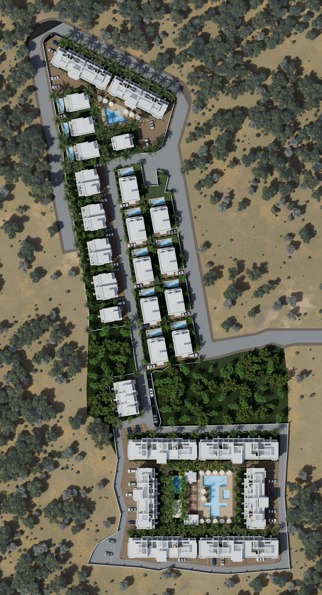

Toplu Konut Projesi — Sanal Tur
Sanal Tur
Mimari DWG çizimlerinden otomatik üretilen 3B modelin fiziksel tabanlı (Blender Cycles) 360° görselleştirmeleri. Her konut kendi turunda; odalar arasında yerdeki halkalarla ya da kat planından gezilir.
1 konut turu18 panorama noktası60 örnek görsel6144 px HD
Vaziyet planı
Numaralı noktalar örnek görsellerin çekildiği yerlerdir; ev simgeleri o konutun 360° turunu açar.

Konutlar
Sürükleyerek bakın, halkalara tıklayarak ilerleyin. Mobilde jiroskop ve tam ekran desteklenir.
Örnek görseller
Site içi, çevre, teras ve iç mekân görünümleri — tam ekranda açmak için görsele dokunun.
Site içi ve teraslar
İç mekân
Site içi, çevre ve gün batımı
Geniş üstten görünüm